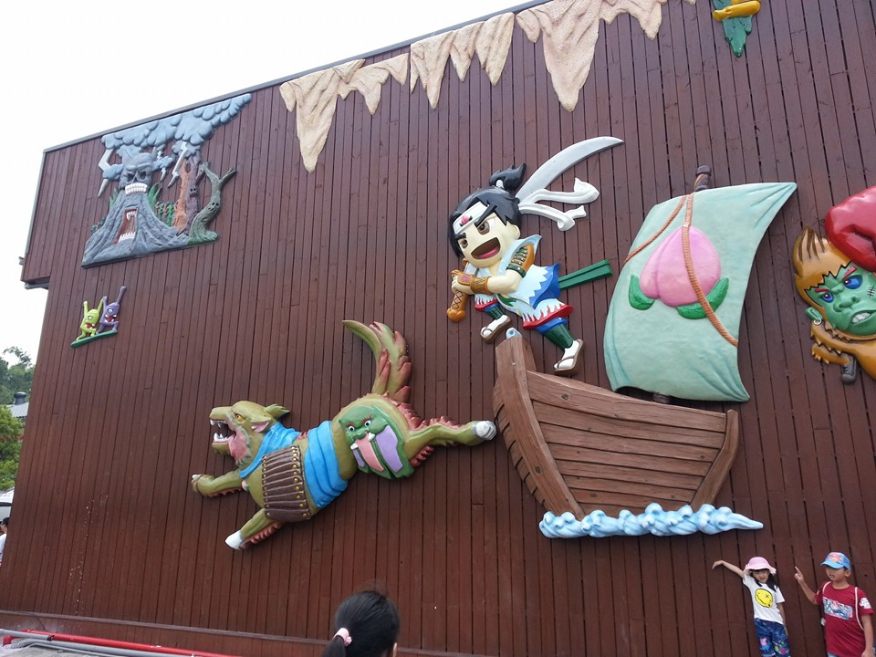
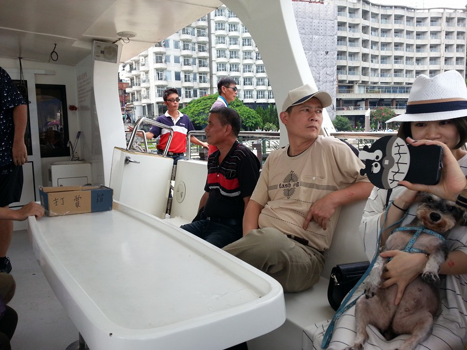
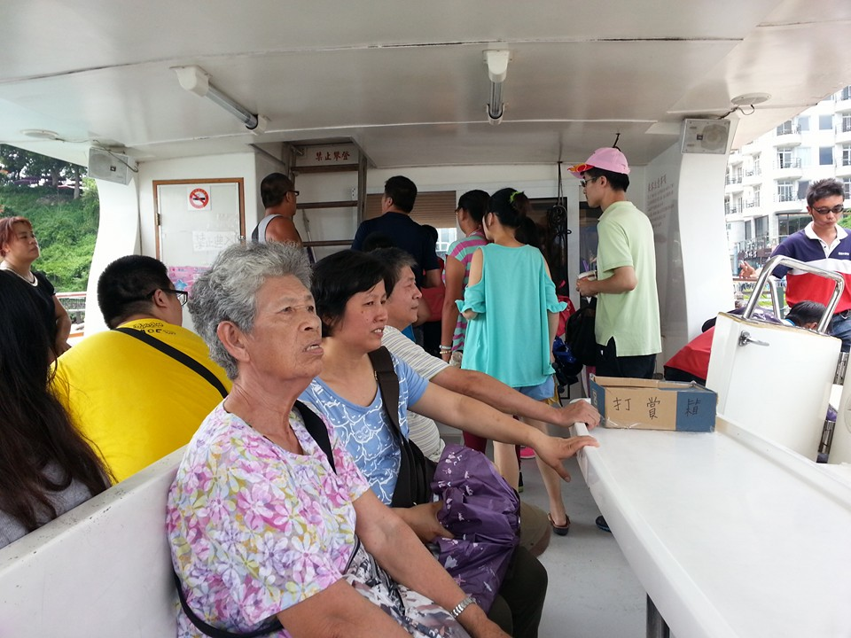

我的旅遊日誌
暑假家庭旅遊7/30星期六
我們家一早來到了南投，第一站去了竹山的桃太郎村，在那裏看到了許多適合小朋友去逛的地點，桃太郎村裡面還有許多以日治時期的建築所搭建的佈景，可以讓人進去拍照觀賞。但是裡面有些小缺點，主題性不太明確，說是桃太郎村卻有一堆不相關的設施，還有就是它的購物商店有點太多，而且門票收得有點小貴。
桃太郎村FB
中午吃過飯後休息片刻，我們接著來到了南投魚池鄉日月潭，那有三個碼頭：水社、玄光、伊達紹，建議從水社碼頭開始坐船遊日月潭，這樣的行程會比較順暢。這裡的票價在150~200座右，大部分的船公司都會在遊客中心附近直接派人賣票，不用特地跑到售票口，而且在這你可以跟他們殺價，可以殺到1人100沒問題。這裡的搭船方式是買一張票可以搭整天的船，從早上9點開始到下午5點半為止都可以在3個碼頭之間無限搭船來回，想去哪個碼頭遊玩皆可以只是搭船要排隊頗耗時間，假日差不多15分鐘一班船坐個5分鐘就可以到下一個碼頭，現在沒什麼陸客了，團課剩沒幾團，大部分看到的都是散客自由行的，在日月潭遊玩不用跟他們人擠人很方便。伊達邵碼頭這裡的伊達邵老街很熱鬧。

搭船時刻表
現在台灣的旅遊品質逐漸回復，各地的觀光景點都很美麗，隨著陸客團的減少，其他的散客也逐漸變多，整個環境都乾淨許多，大家可以多到其他地方旅遊。